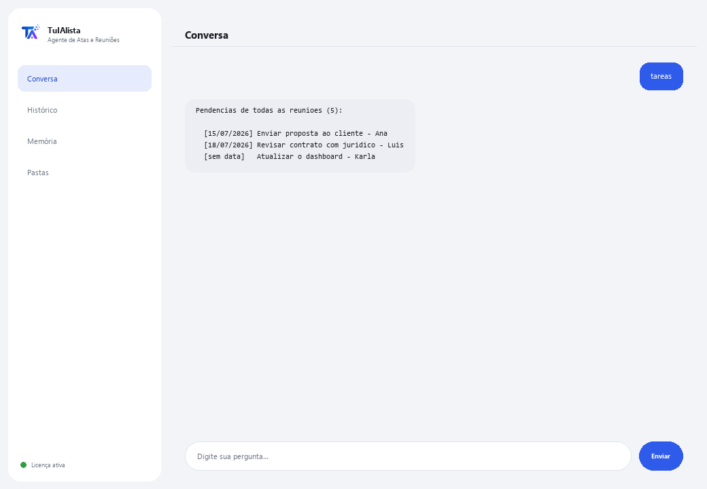

Agente de Atas e Reuniões
Transforma suas anotações de reunião em atas claras e extrai automaticamente os acordos e as tarefas.
O que resolve e o que você precisa?
Em quase toda reunião se decidem coisas e se distribuem pendências, mas depois ninguém escreve uma ata organizada e os acordos se perdem. Este agente lê suas anotações ou transcrições e monta a ata, extrai tarefas com responsável e data, e detecta quais pendências de reuniões passadas podem estar sendo esquecidas.
- Você precisa: sua chave de licença (TIA-XXXX-XXXX-XXXX-XXXX) e a pasta com suas anotações de reunião. Nada de Python nem conhecimento técnico.
- Primeiro resultado em menos de 5 minutos: instala, ativa, escolhe sua pasta e roda minuta <arquivo> para sua primeira ata pronta.
- Suas anotações nunca saem do seu computador — a leitura roda localmente.
soporte@tuialista.com ou acesse tuialista.com/soporte — normalmente respondemos no mesmo dia útil.1 O que este agente faz
Você aponta para a pasta com suas anotações ou transcrições de reunião e ele:
- Lê todas (texto, Markdown, Word e PDF), sem você precisar abri-las.
- Gera uma ata estruturada: título, data, participantes, temas, decisões e tarefas.
- Extrai as tarefas e compromissos com seu responsável e prazo quando aparecem.
- Separa claramente decisões já tomadas de tarefas futuras.
- Consolida as pendências de todas as reuniões e detecta acompanhamento: tarefas passadas que podem continuar em aberto.
- Responde suas perguntas sobre o que foi falado: “o que ficou acordado sobre o orçamento?”
O resultado: você sai de cada reunião com uma ata pronta e uma lista de pendências clara, sem gastar tempo escrevendo.
2 Instalação (2 minutos)
Para Windows. Não precisa de internet o tempo todo nem enviar nada para a nuvem.
Baixe o instalador em tuialista.com/descargar (agente Atas) e abra-o. Ele cria um atalho na sua área de trabalho com o logo — não precisa de Python nem terminal.
Dê duplo clique no novo ícone. Cole sua chave de licença (você a recebeu por e-mail na compra) e clique em Ativar. Você verá um check verde quando for válida.
Selecione a pasta com suas anotações de reunião e clique em Começar a usar o agente. Na próxima vez ele abre direto — lembra sua chave e sua pasta.
3 Como usar
O agente abre uma janela de chat, como um app de mensagens — não é uma tela preta de programador. Você escreve seu comando ou pergunta na caixa de texto abaixo, clica em Enviar (ou Enter), e a resposta aparece como uma mensagem, igual nesta imagem real:

Os comandos a seguir são as palavras que você pode escrever nessa mesma caixa de texto:
> minuta <arquivo>Ata estruturada dessa reunião: título, data, participantes, temas tratados, decisões, tarefas (com responsável e prazo) e próximos passos.
> tareasConsolida as tarefas de todas as reuniões indexadas, ordenadas por prazo.
> decisiones <arquivo>Só as decisões/acordos concretos de uma reunião, sem as tarefas futuras.
> seguimientoTarefas de reuniões passadas que podem continuar em aberto (sem data ou com data vencida), para que nada seja esquecido.
> resumen <arquivo>Resumo executivo curto (máx. ~150 palavras) para quem não participou: o que foi discutido, o que foi decidido e as próximas ações.
> pergunta livre?Escreva sua pergunta e o agente busca no histórico de reuniões, ex.: o que foi acordado sobre o lançamento de julho?
> sairEncerra a sessão (exit também funciona).
4 Exemplos de uso comum
Ata pronta ao terminar a reunião
Você salva suas anotações brutas e minuta reuniao-de-hoje.txt — recebe a ata estruturada para compartilhar com a equipe.
Revisar pendências antes da próxima reunião
tareas — você chega com a lista consolidada de compromissos e responsáveis.
Resgatar tarefas que estavam se perdendo
seguimiento — detecta o que sobrou de reuniões anteriores e continua em aberto.
Atualizar alguém que faltou
resumen reuniao-estrategia.docx
5 Perguntas frequentes
Minhas anotações são enviadas para a internet?
Preciso de internet para usar?
Quais formatos ele aceita?
Como ele detecta as tarefas e os responsáveis?
Como ele sabe a data da reunião?
Em que idioma ele responde?
Ele lê um PDF escaneado?
Posso mudar a pasta de reuniões?
As atas são 100% exatas?
Ele guarda histórico entre sessões?
6 Solução de problemas
Não lê um .docx ou .pdf
Mostra “0 reuniões indexadas”
Diz “Licença inválida” ou pede para reconectar
“Nenhum provedor de IA configurado”
Nenhuma dessas soluções resolveu seu problema? Escreva para nós diretamente — teremos prazer em revisar com você.
soporte@tuialista.com ou acesse tuialista.com/soporte — normalmente respondemos no mesmo dia útil.7 Privacidade e confidencialidade
Suas anotações de reunião nunca saem do seu computador.
- O agente lê e indexa os arquivos localmente, no seu próprio computador. Não os envia para nenhum servidor.
- A detecção local de tarefas, datas e participantes acontece no seu computador.
- A única coisa que trafega pela internet é: (1) uma verificação de que sua licença está ativa — que não inclui o conteúdo das suas anotações —, e (2) ao gerar uma ata, resumo ou pergunta, um fragmento do texto é enviado ao motor de IA para redigir a resposta.